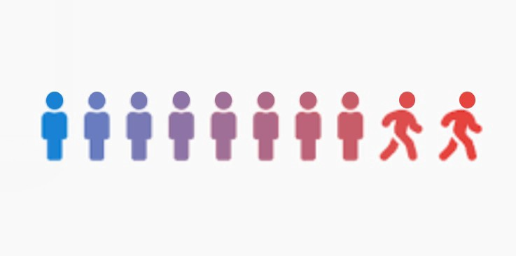

Cell2Cell Customer Churn Prediction Model
(Using R, MS Excel, MS PowerPoint)

In order to reduce the profit loss caused by churn customers to the company, cellular companies want to adopt a proactive retention program to efficiently focus their marketing-dollars and also to tailor an offer to the customer ’s needs.
Used machine learning algorithms and deep leaning algorithms, find measures like accuracy, ROC, AUC to predict a customer churn.
Click to check out the codes
Presentation Slides
Cell2Cell.pptx by Yiyang Wang